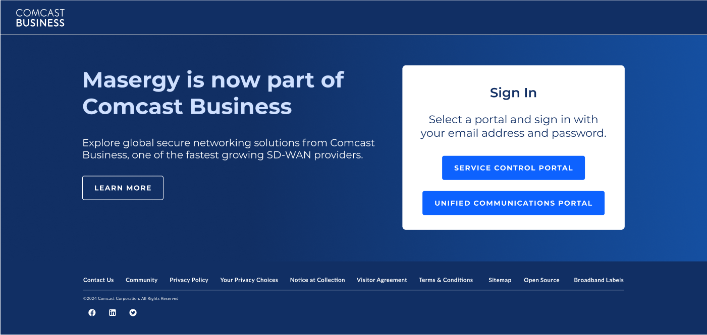
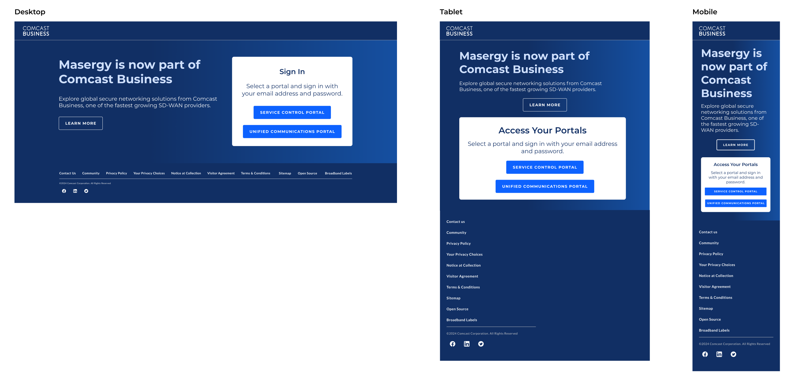
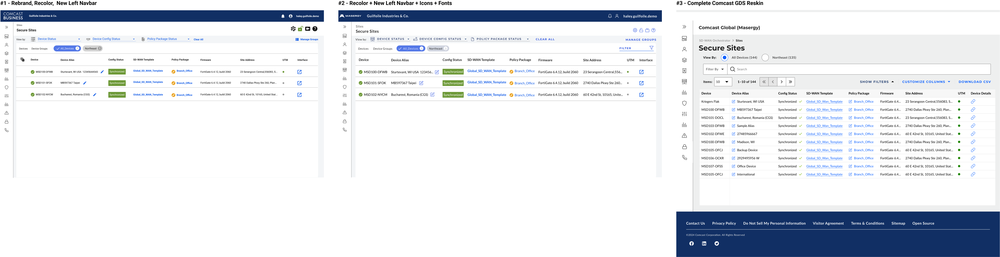
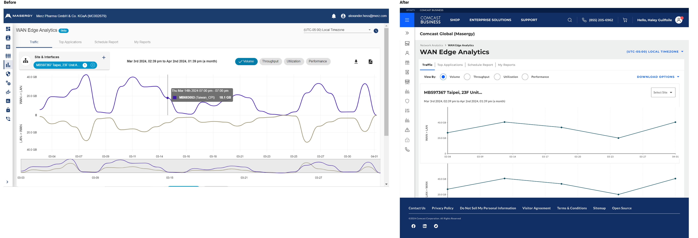

- •
- •
- •
Comcast - Masergy Brand Sunset
2024 - Integration, Rebrand, Reskin


Comcast Business acquired Masergy in October 2021. Masergy continued operations as a separate entity on a practical level until Q2 2024, at which point the roadmap shifted to put a focus on sunsetting Masergy.com, rebranding, and reskinning the Masergy ISC Portal to better match the CB design library.
As design lead for all Masergy-relate projects, I designed a temporary “homepage” for Masergy.com redirects to allow users to retain access their portals after the retirement of Masergy.com. I worked with devs to cobrand the ISC Portal to reflect the integration of Masergy into CB, and utilized the Comcast Business Global Design system components to reskin the ISC Portal.
The Masergy branding team made the decision to sunset Masergy.com, and began efforts from a comms standpoint in Q2 of 2024. Unfortunately, the digital product team wasn’t notified until the very end of Q3.
With a short timeline to turn around a solution before the sunset date of December 17th, the team needed to work quickly to address customer needs (primarily communication of the changes to legacy customers and providing access to both Masergy portal login pages), and make the necessary changes within the Masergy ISC Portal.
After many different potential solutions were explored- the team decided a temporary redirect to a page with messaging and login links would solve the customer needs re: Masergy.com.
Cobranding the ISC Portal would allow legacy customers to adjust to the changes while taking in a significant amount of visual/UX changes to a Portal that hadn’t changed much in over a decade. Reskinning the portal using CB Design Components would allow for easier global changes, and mantain brand consistency across the Comcast Business product suite.
Working closely with content, product, and the dev team, I explored 5 very different potential solutions (adding content to comcastbusiness.com, adding Masergy login links within CB MyAccount, designing a new page, etc). Some of these solutions were more technically feasible than others. Ultimately, the timeframe limited our options and led the team to create a new page that Masergy.com could redirect to until all legacy Masergy customers could be onboarded into MyAccount.
I iterated on this page design with the key goals of communicating the changes to legacy customers and providing login links to both Masergy portals. Once we landed on a design and content, I provided the dev team with designs for Desktop, Tablet, and Mobile breakpoints.
With the tight deadline in mind, we managed to turn this solution around in under 3 weeks with content and legal approval, giving developers plenty of time to create and test the new redirect page.

Utilizing the existing Comcast Business Global Design System, I put together designs for a reskinned ISC Portal. Since many components weren’t a 1:1 match as far as UX- many usability improvements were made as consistency was introduced to a portal that was lacking UX Design Direction for over 19 years (until I joined the org in 2023).
Development would take place in 3 steps in order to manage such an undertaking - first a rebrand, recolor and leftnav update, next font and icon updates, and lastly a full reskin.

Despite the extremely tight timeline, I delivered designs for strong solutions to address the multiple concerns as the organization prepared to sunset Masergy.com. Customers retain the ability to access their portal logins while better understanding the changes to the brand. The next steps for the multi-step approach to the application Reskin are designed and ready as developers begin to tackle updating the legacy ISC Portal design to better match Comcast Business standards.
